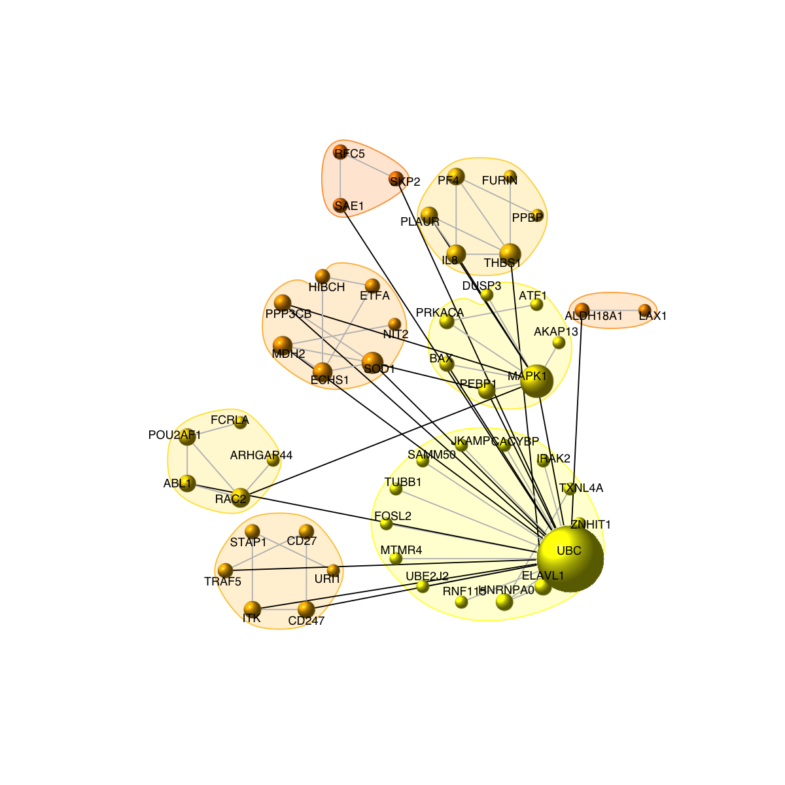
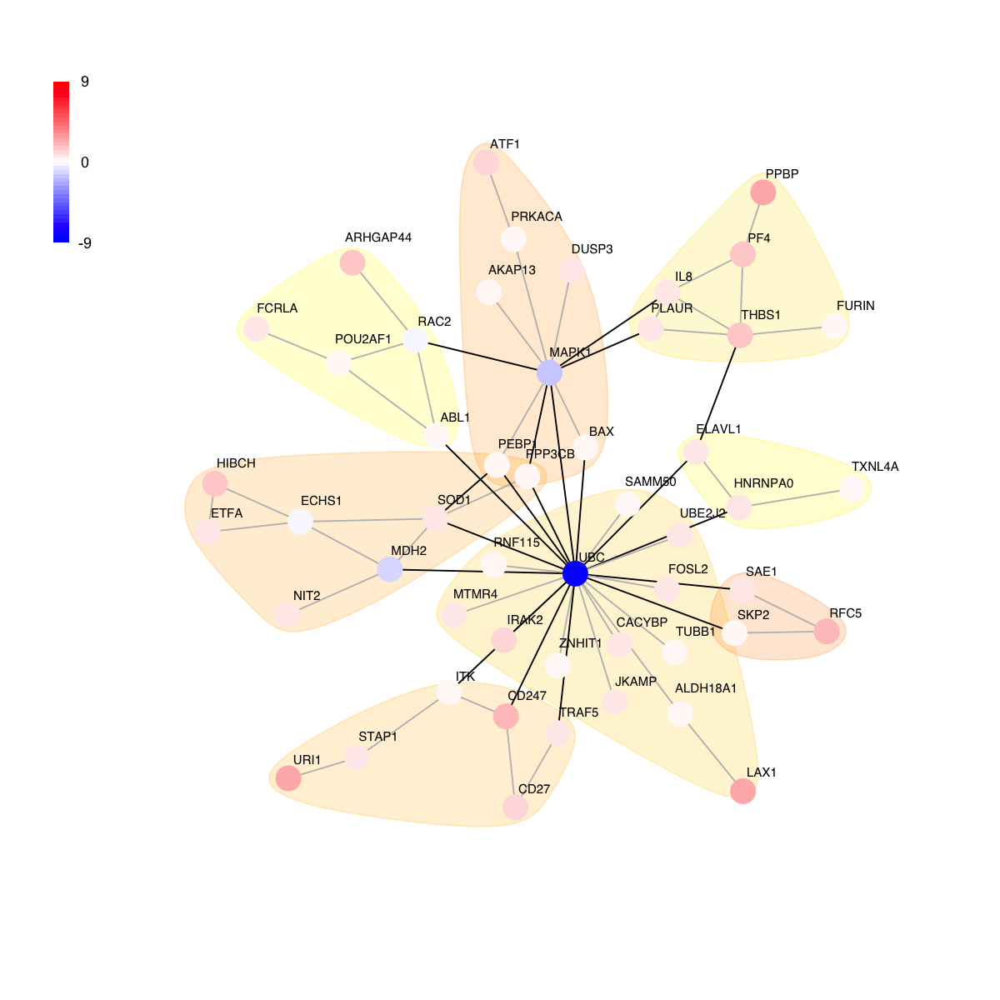
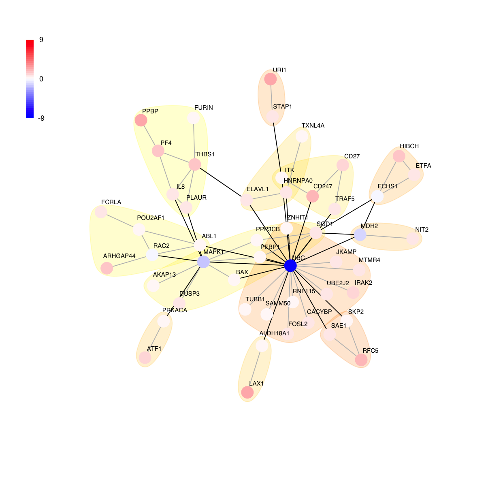
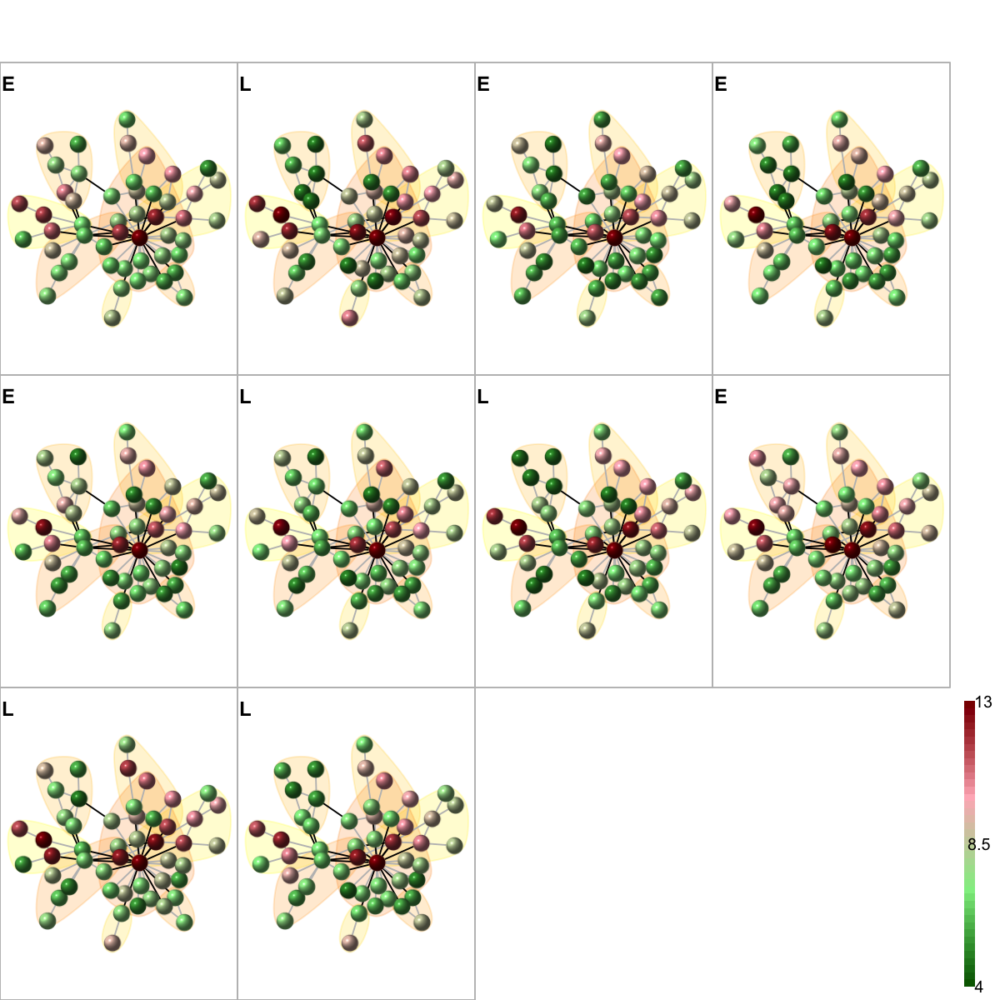

'CLL' (from http://supfam.org/dnet/RData/1.0.7/CLL.RData) has been loaded into the working environment
CLL
ExpressionSet (storageMode: lockedEnvironment)
assayData: 54675 features, 130 samples
element names: exprs
protocolData: none
phenoData
sampleNames: GSM977137 GSM977138 ... GSM977266 (130 total)
varLabels: Name Time Treatment
varMetadata: labelDescription
featureData
featureNames: 1007_s_at 1053_at ... AFFX-TrpnX-M_at (54675 total)
fvarLabels: EntrezID Symbol Desc
fvarMetadata: labelDescription
experimentData: use 'experimentData(object)'
Annotation:
# Non-specific probesets filtering: the signals below log2(30) are considered as being technically unreliable (i.e. an empirically determined value of minimum sensitivity). Also, those probesets with >70% of samples having technically unriliable signals were excluded from further consideration
sensVal <- log2(30)
filter_flag <- apply(exprs(CLL) 0.7*ncol(exprs(CLL))
eset <- CLL[!filter_flag,]
# Create esetNew after replacing all those less than "sensVal" with "sensVal"
new.matrix <- exprs(eset)
new.matrix[new.matrix <= sensVal] <- sensVal
esetNew <- new("ExpressionSet",exprs=new.matrix,phenoData=as(pData(eset),"AnnotatedDataFrame"),featureData=as(fData(eset),"AnnotatedDataFrame"))
# A function to convert probeset-centric to entrezgene-centric expression levels
prob2gene <- function(eset){
fdat <- fData(eset)
tmp <- as.matrix(unique(fdat[c("EntrezID", "Symbol", "Desc")]))
forder <- tmp[order(as.numeric(tmp[,1])),]
forder <- forder[!is.na(forder[,1]),]
rownames(forder) <- forder[,2]
system.time({
dat <- exprs(eset)
edat <- matrix(data=NA, nrow=nrow(forder), ncol=ncol(dat))
for (i in 1:nrow(forder)){
ind <- which(fdat$EntrezID==forder[i,1])
if (length(ind) == 1){
edat[i,] <- dat[ind,]
}else{
edat[i,] <- apply(dat[ind,],2,mean)
}
}
})
rownames(edat) <- rownames(forder) # as gene symbols
colnames(edat) <- rownames(pData(eset))
esetGene <- new("ExpressionSet",exprs=data.frame(edat),phenoData=as(pData(eset),"AnnotatedDataFrame"),featureData=as(data.frame(forder),"AnnotatedDataFrame"))
return(esetGene)
}
esetGene <- prob2gene(esetNew)
esetGene
ExpressionSet (storageMode: lockedEnvironment)
assayData: 9324 features, 130 samples
element names: exprs
protocolData: none
phenoData
sampleNames: GSM977137 GSM977138 ... GSM977266 (130 total)
varLabels: Name Time Treatment
varMetadata: labelDescription
featureData
featureNames: A1BG NAT1 ... BISPR (9324 total)
fvarLabels: EntrezID Symbol Desc
fvarMetadata: labelDescription
experimentData: use 'experimentData(object)'
Annotation:
'org.Hs.string' (from http://supfam.org/dnet/RData/1.0.7/org.Hs.string.RData) has been loaded into the working environment
org.Hs.string
IGRAPH UN-- 18492 728141 --
+ attr: name (v/c), seqid (v/c), geneid (v/n), symbol (v/c),
| description (v/c), neighborhood_score (e/n), fusion_score (e/n),
| cooccurence_score (e/n), coexpression_score (e/n), experimental_score
| (e/n), database_score (e/n), textmining_score (e/n), combined_score
| (e/n)
+ edges (vertex names):
[1] 3025671--3031737 3021358--3027795 3021358--3027929 3021358--3027741
[5] 3024278--3029186 3029373--3031543 3031543--3034385 3019006--3030823
[9] 3015391--3030823 3021191--3028634 3021191--3024550 3021191--3033402
[13] 3031876--3031959 3015324--3031959 3023108--3033954 3016546--3020273
+ ... omitted several edges
# extract network that only contains genes in esetGene
ind <- match(V(org.Hs.string)$symbol, rownames(esetGene))
## for extracted expression
esetGeneSub <- esetGene[ind[!is.na(ind)],]
esetGeneSub
ExpressionSet (storageMode: lockedEnvironment)
assayData: 8858 features, 130 samples
element names: exprs
protocolData: none
phenoData
sampleNames: GSM977137 GSM977138 ... GSM977266 (130 total)
varLabels: Name Time Treatment
varMetadata: labelDescription
featureData
featureNames: ZNF445 MVP ... XKR8 (8858 total)
fvarLabels: EntrezID Symbol Desc
fvarMetadata: labelDescription
experimentData: use 'experimentData(object)'
Annotation:
IGRAPH UN-- 8796 259371 --
+ attr: name (v/c), seqid (v/c), geneid (v/n), symbol (v/c),
| description (v/c)
+ edges (vertex names):
[1] ZNF445--KDM2B ZNF445--RANBP2 ZNF445--KDM6B ZNF445--SEC22C
[5] ZNF445--XRN1 ZNF445--UTY ZNF445--KDM2A ZNF445--PTPN23
[9] ZNF445--UBA52 ZNF445--KDM6A MVP --ABCC1 MVP --PTPN11
[13] MVP --TFCP2 MVP --CHMP4B MVP --AES MVP --PSTPIP1
[17] MVP --HSP90AB1 MVP --BANP MVP --GTF3C2 MVP --VAC14
[21] MVP --PSAP MVP --RFWD2 MVP --SKIL MVP --ZMIZ2
[25] MVP --ITIH4 MVP --BAG3 MVP --NAT10 MVP --KPNA3
+ ... omitted several edges
# according to sampling time to first treatment (years), patient samples are categorised into 3 groups: early-phase disease (E) if they were collected more than 4 years before treatment, intermediate phase (I) if collected 4 or less, but 1 or more, years before treatment (yellow bars), or late phase (L) if collected less than 1 year before treatment.
EIL <- sapply(pData(esetGeneSub)$Time, function(x) {
if(x>4){
"E"
}else if(x<1){
"L"
}else{
"I"
}
})
# 1) preparation of node p-values
design <- model.matrix(~ -1 + factor(EIL))
colnames(design)<- c("E", "I", "L")
contrast.matrix <- makeContrasts(L-E, I-E, L-I, levels=design)
colnames(contrast.matrix) <- c("L_E", "I_E", "L_I")
contrast.matrix
Contrasts
Levels L_E I_E L_I
E -1 -1 0
I 0 1 -1
L 1 0 1
fit <- lmFit(exprs(esetGene), design)
fit2 <- contrasts.fit(fit, contrast.matrix)
fit2 <- eBayes(fit2)
# for p-value
pvals<-as.matrix(fit2$p.value)
# for adjusted p-value
adjpvals <- sapply(1:ncol(pvals),function(x) {
p.adjust(pvals[,x], method="BH")
})
colnames(adjpvals) <- colnames(pvals)
# num of differentially expressed genes
apply(adjpvals<1e-1, 2, sum)
L_E I_E L_I
59 0 0
Start at 2015-07-16 16:41:21
First, fit the input p-value distribution under beta-uniform mixture model...
A total of p-values: 9324
Maximum Log-Likelihood: 1720.1
Mixture parameter (lambda): 0.000
Shape parameter (a): 0.576
Second, determine the significance threshold...
Via constraint on the size of subnetwork to be identified (20 nodes)
Scanning significance threshold at rough stage...
significance threshold: 1.00e-06, corresponding to the network size (0 nodes)
significance threshold: 1.00e-05, corresponding to the network size (0 nodes)
significance threshold: 1.00e-04, corresponding to the network size (0 nodes)
significance threshold: 1.00e-03, corresponding to the network size (0 nodes)
significance threshold: 1.00e-02, corresponding to the network size (1 nodes)
significance threshold: 1.00e-01, corresponding to the network size (671 nodes)
Scanning significance threshold at finetune stage...
significance threshold : 1.50e-02, corresponding to the network size (4 nodes)
significance threshold : 2.00e-02, corresponding to the network size (6 nodes)
significance threshold : 2.50e-02, corresponding to the network size (12 nodes)
significance threshold : 3.00e-02, corresponding to the network size (14 nodes)
significance threshold : 3.50e-02, corresponding to the network size (23 nodes)
significance threshold: 3.50e-02
Third, calculate the scores according to the fitted BUM and FDR threshold (if any)...
Amongst 9324 scores, there are 109 positives.
Finally, find the subgraph from the input graph with 8796 nodes and 259371 edges...
Size of the subgraph: 23 nodes and 24 edges
Finish at 2015-07-16 16:50:50
Runtime in total is: 569 secs
glayout <- layout.fruchterman.reingold(g)
# 3) color nodes according to communities identified via a spin-glass model and simulated annealing
#com <- walktrap.community(g, modularity=T)
com <- spinglass.community(g, spins=25)
com$csize <- sapply(1:length(com),function(x) sum(com$membership==x))
vgroups <- com$membership
colormap <- "yellow-darkorange"
palette.name <- visColormap(colormap=colormap)
mcolors <- palette.name(length(com))
vcolors <- mcolors[vgroups]
com$significance <-
dCommSignif(g, com)
# 4) size nodes according to degrees
vdegrees <- igraph::degree(g)
# 5) sort nodes: first by communities and then degrees
tmp <- data.frame(ind=1:vcount(g), vgroups, vdegrees)
ordering <- tmp[order(vgroups,vdegrees),]$ind
# 6) visualise graph using 1-dimensional arc diagram
visNetArc(g, ordering=ordering, labels=V(g)$geneSymbol, vertex.label.color=vcolors, vertex.color=vcolors, vertex.frame.color=vcolors, vertex.size=log(vdegrees)+0.1, vertex.label.cex=0.4)
# 7) visualise graph using circle diagram
# 7a) drawn into a single circle
visNetCircle(g=g, com=com, ordering=ordering, colormap=colormap, vertex.label=V(g)$symbol, vertex.size=igraph::degree(g)+5, vertex.label.color="black", vertex.label.cex=0.6, vertex.label.dist=0.75, vertex.shape="sphere", edge.color.within="grey", edge.color.crossing="black", edge.width=1, edge.lty=1, mark.shape=1, mark.expand=10)
# 7b) drawn into multiple circles
visNetCircle(g=g, com=com, circles="multiple", ordering=ordering, colormap=colormap, vertex.label=V(g)$symbol, vertex.size=igraph::degree(g)+5, vertex.label.color="black", vertex.label.cex=0.6, vertex.label.dist=0.25, vertex.shape="sphere", edge.color.within="grey", edge.color.crossing="black", edge.width=1, edge.lty=1, mark.shape=1, mark.expand=10)
# 8) as comparison, also visualise graph on 2-dimensional layout
mark.groups <- communities(com)
legend("bottomleft", legend=legend_name, fill=mcolors, bty="n", cex=0.6)



Start at 2015-07-16 16:51:16
First, define topology of a map grid (2015-07-16 16:51:16)...
Second, initialise the codebook matrix (25 X 24) using 'linear' initialisation, given a topology and input data (2015-07-16 16:51:16)...
Third, get training at the rough stage (2015-07-16 16:51:16)...
1 out of 250 (2015-07-16 16:51:16)
25 out of 250 (2015-07-16 16:51:16)
50 out of 250 (2015-07-16 16:51:16)
75 out of 250 (2015-07-16 16:51:16)
100 out of 250 (2015-07-16 16:51:16)
125 out of 250 (2015-07-16 16:51:16)
150 out of 250 (2015-07-16 16:51:16)
175 out of 250 (2015-07-16 16:51:16)
200 out of 250 (2015-07-16 16:51:16)
225 out of 250 (2015-07-16 16:51:16)
250 out of 250 (2015-07-16 16:51:16)
Fourth, get training at the finetune stage (2015-07-16 16:51:16)...
1 out of 1000 (2015-07-16 16:51:16)
100 out of 1000 (2015-07-16 16:51:16)
200 out of 1000 (2015-07-16 16:51:16)
300 out of 1000 (2015-07-16 16:51:16)
400 out of 1000 (2015-07-16 16:51:16)
500 out of 1000 (2015-07-16 16:51:16)
600 out of 1000 (2015-07-16 16:51:16)
700 out of 1000 (2015-07-16 16:51:16)
800 out of 1000 (2015-07-16 16:51:16)
900 out of 1000 (2015-07-16 16:51:16)
1000 out of 1000 (2015-07-16 16:51:16)
Next, identify the best-matching hexagon/rectangle for the input data (2015-07-16 16:51:16)...
Finally, append the response data (hits and mqe) into the sMap object (2015-07-16 16:51:16)...
Below are the summaries of the training results:
dimension of input data: 10x24
xy-dimension of map grid: xdim=5, ydim=5
grid lattice: rect
grid shape: sheet
dimension of grid coord: 25x2
initialisation method: linear
dimension of codebook matrix: 25x24
mean quantization error: 3.38747372719959
Below are the details of trainology:
training algorithm: sequential
alpha type: invert
training neighborhood kernel: gaussian
trainlength (x input data length): 25 at rough stage; 100 at finetune stage
radius (at rough stage): from 1 to 1
radius (at finetune stage): from 1 to 1
End at 2015-07-16 16:51:16
Runtime in total is: 0 secs

){kind=link}
){kind=link}
){kind=link}
){kind=link}
){kind=link}
){kind=link}